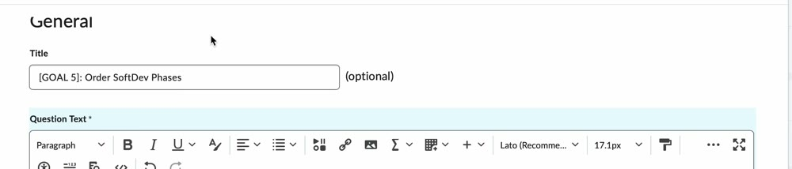
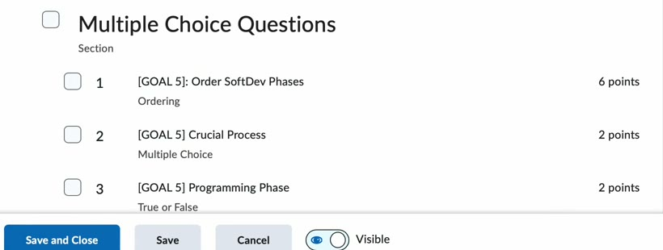
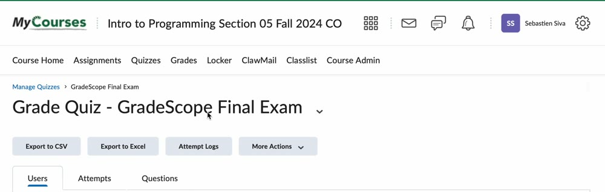
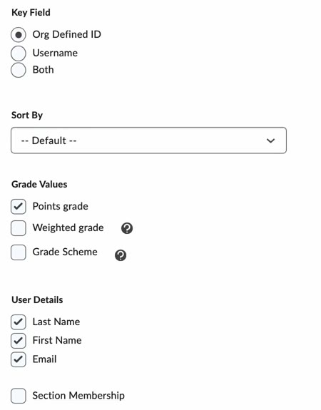
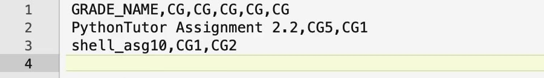
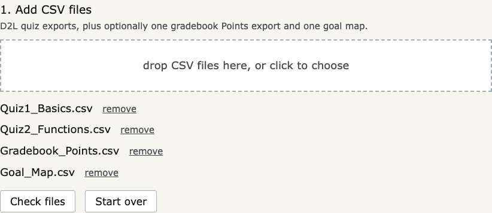
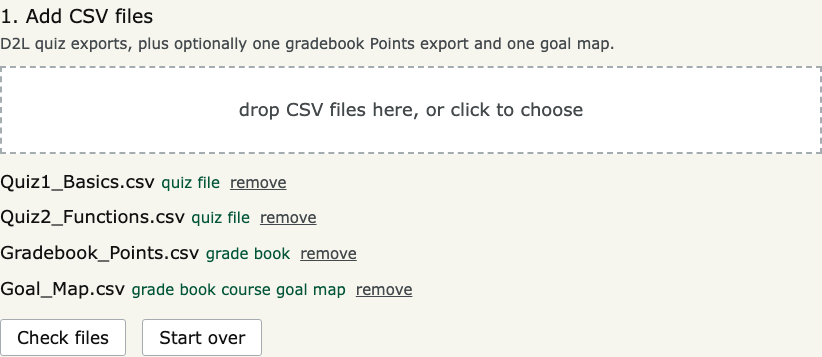
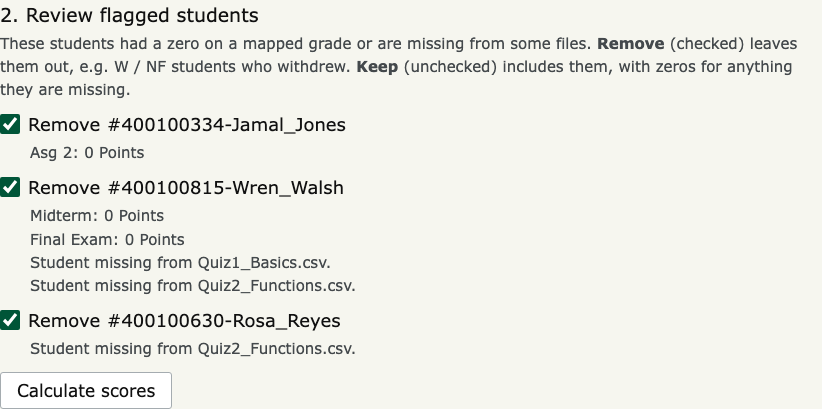
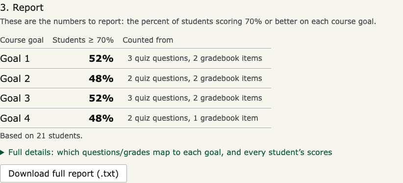

Starting Python in this browser tab: downloading the Pyodide runtime (CPython compiled to
WebAssembly, ~10 MB, cached after the first visit)… This can take up to a minute.
1. Add CSV files
D2L quiz exports, plus optionally one gradebook Points export and one goal map.
drop CSV files here, or click to choose
2. Review flagged students
These students had a zero on a mapped grade or are missing from some files.
Remove (checked) leaves them out, e.g. W / NF students who withdrew.
Keep (unchecked) includes them, with zeros for anything they are missing.
3. Report
These are the numbers to report: the percent of students scoring 70% or better on each course goal.
Full details: which questions/grades map to each goal, and every student’s scores
Every other semester, each section reports the percent of students scoring 70% or better on each course goal.
This tool computes those numbers from D2L exports in a few seconds, replacing the old spreadsheet work.
Adapted from Dr. Sebastien Siva’s video walkthrough of the desktop version.
There are two ways to tell the tool which work belongs to which course goal. Use either one, or both together.
Approach A: tag quiz questions (most common, e.g. your final exam)
Before giving the quiz, put a tag such as [GOAL 5] in each question’s
Title or its Question Text. Either place works. A question that covers several goals
can carry several tags, e.g. [GOAL 3][GOAL 4].
Capitalisation doesn’t matter ([Goal 3] works), but the format does: square brackets,
the word GOAL, one space, the number. GOAL 3, (GOAL 3), [GOAL3] and
[ GOAL 3] are not recognised; the tool warns you when it sees one.

The tag at the start of the question title.

Tagged questions in the quiz’s question list.
After students have taken it, go to Quizzes, open the quiz’s menu, choose Grade,
then click Export to CSV.

Grade Quiz page: Export to CSV.
Have a midterm and a final (or several quizzes)? Export each one and add them all; the points are combined.
Approach B: map whole gradebook items to goals
In Grades, choose Export. Set Key Field to Org Defined ID, tick
Points grade, and tick Last Name, First Name and Email. Then click
Export to CSV and Download (D2L can take a minute to prepare the file).

Export Grades options.
Make sure no grades are blank. Enter zeros for missing grades in D2L, or delete those students’
rows from the CSV.
Create a goal map CSV in a text editor (Notepad, TextEdit, BBEdit, etc.).
The first row is the header GRADE_NAME,CG,CG,.... Each following row is a gradebook item’s
name, spelled exactly as in D2L (capitalisation included), followed by the goals it counts toward, written as
CG1, CG2… in capitals with no spaces after the commas.
()

Example goal map: PythonTutor Assignment 2.2 counts toward goals 5 and 1.
Add the gradebook export and the goal map together. Either one alone is rejected.
Both approaches together
Add the quiz exports, the gradebook export and the goal map at the same time. They must be from the same section,
or every student will be flagged as missing from some file. Points are points: they are added up
unweighted, so a 20-point quiz question and a 20-point assignment count equally toward a goal.
Running the tool
Add your CSV files: drop them on the box or click it to choose them.

Four files added (fake sample data).
Check files. Each file is labelled with what it was recognised as. Anything in red is skipped and says why.
A gold box lists anything that would make a goal quietly wrong: mistyped tags, a quiz with no tags,
goal-map goals like cg1, or goal-map items that aren’t in the gradebook.

Every file recognised.
Review flagged students: students missing from a file or with a zero on a mapped grade.
Remove anyone who withdrew (W / NF). Keep a student to include them with zeros for whatever
they are missing. The decision is yours, or your course coordinator’s.

Flagged students and the reason for each.
Calculate scores. The table at the top holds the numbers you report. The Counted from column
shows how many quiz questions and gradebook items fed each goal, a quick check that every goal got the work you expected. The full details
(which questions and grades fed each goal, and every student’s per-goal score) are below it and in the
downloadable report.

The report.
Tips
If you need to look at or edit an export, use a text editor rather than Excel: Excel can change IDs it mistakes for numbers.
Long file names are fine, but short ones are easier to read in the file list.
How it works
This page runs the same cg_score.py as the desktop app, using
Pyodide (the CPython interpreter compiled to
WebAssembly). Added CSVs are copied into an in-memory file system inside the browser tab, read with Python’s
csv module, then deleted. Only the Pyodide runtime is downloaded (from the jsDelivr CDN); no grade data
is sent anywhere, and closing the tab clears everything.
D2L screenshots are taken from Dr. Siva’s tutorial video; tool screenshots use made-up sample data.